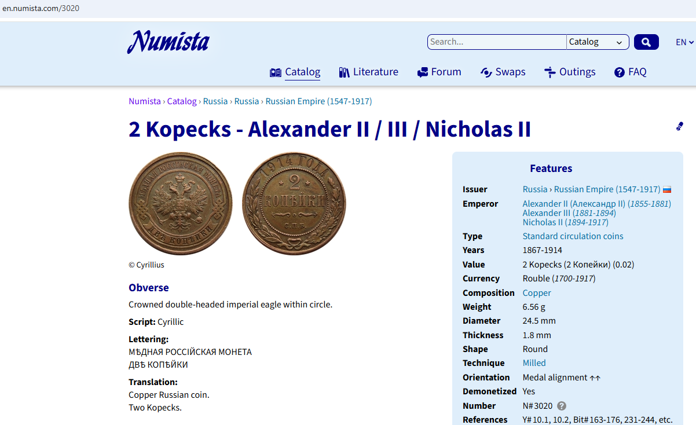
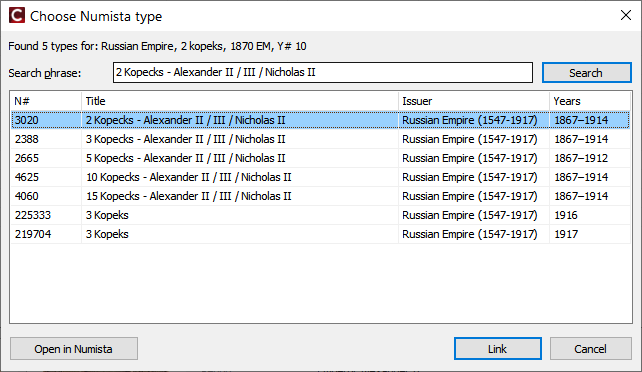
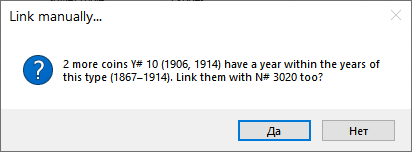
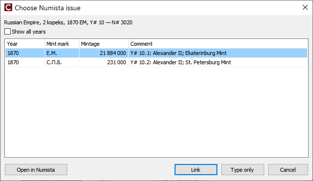

Як пов'язати монету — типові випадки
Знайдіть випадок, схожий на ваш: що ви бачите — що робити — де читати докладніше.
1. У монети є номер KM#, Y# або C#
Ви бачите: номер у рядку uCoin number/Номер uCoin у подробицях.
Що робити: позначте монети й натисніть Auto-link/Автозв'язок. Більшість таких монет зв'язуються одразу.
Докладніше: Numista: зв'язок монет.
2. Номер uCoin (UC#), пам'ятна монета
Ви бачите: UC# 428 замість KM#. Numista не знає номерів uCoin.
Що робити: автозв'язок шукає за фразою країна + рік + сюжет. Пам'ятні монети одного року відрізняються лише
сюжетом — перевірте, що в картці монети заповнено Subject/Сюжет.
Докладніше: Numista: зв'язок монет, розділ Монети з номером uCoin.
3. Нічого не знайдено
Ви бачите: автозв'язок рахує монету як не знайдено; список типів порожній.
Чому: іноді Numista зберігає номер у каталозі не в типу, а в його випусків (приклад: Російська імперія,
2 копійки Y# 10 — на Numista це один тип 2 Kopecks — Alexander II / III / Nicholas II), або назви
різняться (uCoin kopeks, Numista Kopecks).
Що робити:
- Знайдіть монету на сайті Numista: пошук за країною й номіналом, порівняйте зображення.
- Скопіюйте назву типу з його сторінки (наприклад
2 Kopecks - Alexander II / III / Nicholas II). - У програмі: Link manually/Пов'язати вручну, вставте назву у Search phrase/Фраза пошуку, натисніть Search/Пошук і виберіть тип. Фраза зберігається в картці монети.


4. Багато років однієї монети
Ви бачите: та сама монета різних років (1 копійка 2005, 2006…), усі з тим самим номером.
Що робити: пов'яжіть одну монету. Програма одразу запропонує пов'язати інші роки (якщо вони входять у роки типу);
автозв'язок теж бере тип від пов'язаної монети — без нових запитів. Кожна монета отримує випуск свого року.
Докладніше: Numista: зв'язок монет, розділ Монети одного номера різних років.

5. Історична держава
Ви бачите: монета знаходиться лише в іншого емітента (Poland 1766 → Polish–Lithuanian Commonwealth).
Що робити: підтвердьте тип у списку. Емітента запам'ятовується для періоду, наступні монети періоду знаходяться одразу.
Докладніше: Numista: зв'язок монет, розділ Історичні держави.
6. Випуск не визначився
Ви бачите: #Numista сірим, тиражу немає. На Numista за рік кілька випусків (різні двори, Proof).
Що робити: заповніть двір у полі Variety/Різновид (наприклад SPB, EM) і пов'яжіть знову
або виберіть самі: Choose issue/Вибрати випуск.

7. Пов'язано з неправильним типом
Що робити: Unlink from Numista/Відв'язати від Numista або просто ще раз Link manually/Пов'язати вручну.
Якщо монету вже вивантажено у вашу колекцію Numista, програма запитає, чи змінити примірник і там.
Докладніше: Numista: зв'язок монет, розділ Помилковий зв'язок.
8. Античні монети та монети, яких немає на uCoin
Що робити: додайте їх на сайті Numista до своєї колекції, потім Numista → Import from my Numista collection/Numista → Імпорт з моєї колекції Numista. Див. З чого почати, шлях 2.